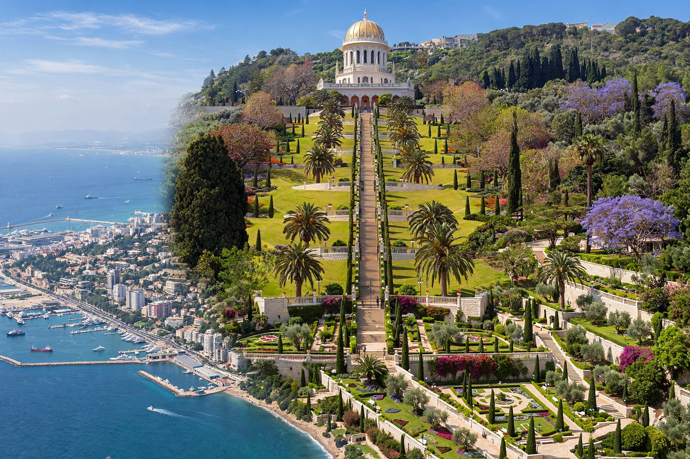

The Baháʼí World Centre is the spiritual and administrative centre of the Baháʼí Faith, located in the twin cities of Haifa and Acre (Akko) in northern Israel. It comprises the Shrine of the Báb and its terraced gardens on Mount Carmel in Haifa, the Shrine of Baháʼu'lláh at Bahjí near Acre, and the administrative buildings of the Arc on Mount Carmel, including the seat of the Universal House of Justice.

| Baháʼí World Centre | |
|---|---|
| Location | Haifa and Acre, Israel |
| Holy sites | Shrine of the Báb; Shrine of Baháʼu'lláh (Bahjí) |
| Governing body | Universal House of Justice |
| UNESCO status | World Heritage Site (2008, "Baháʼí Holy Places in Haifa and the Western Galilee") |
The centre's location stems from the exile of Baháʼu'lláh, founder of the Baháʼí Faith, whom the Ottoman authorities banished to the penal colony of Acre in 1868. He spent his remaining years in the Acre area and died at Bahjí in 1892, where his shrine — the Qiblih, the point of adoration for Baháʼís — now stands. His son ʻAbdu'l-Bahá supervised the building of the Shrine of the Báb on Mount Carmel, where the remains of the Báb, the Faith's forerunner prophet, were interred in 1909. Under Shoghi Effendi and then the Universal House of Justice (first elected in 1963), the administrative centre developed on the Arc on Mount Carmel: the Seat of the Universal House of Justice (completed 1982), the International Teaching Centre, the Centre for the Study of the Texts, and the International Archives.
The nineteen terraces of the Baháʼí Gardens, completed in 2001, stretch from the German Colony at the foot of Mount Carmel to the summit and are among Haifa's best-known landmarks. Baháʼís undertake a nine-day pilgrimage to the holy places in Haifa and Acre. In 2008 UNESCO inscribed the Baháʼí Holy Places in Haifa and the Western Galilee on the World Heritage List. Related holy places in the region include the prehistoric caves at Nahal Me'arot further south along the Carmel coast. The prophet Elijah is also associated with Mount Carmel in biblical tradition.
Article recreated from memory for the muse-webcrawl project.